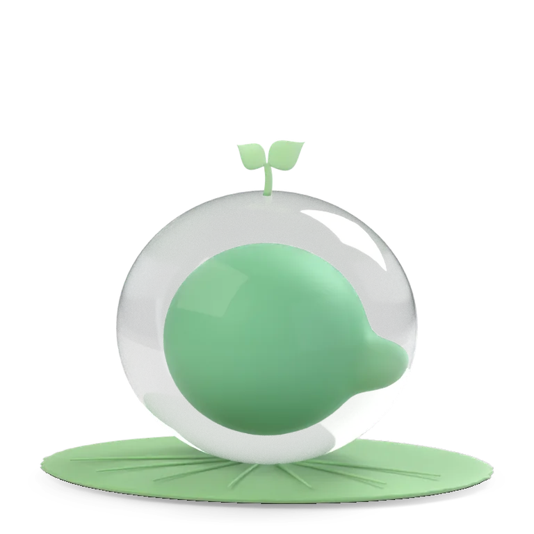

레퍼런스 앱의 배치·흐름만 따르고 그림·로고는 꿈틀 것으로 바꿨다. 다섯 방향은 서로 성격이 다르다 — 고르시면 그 방향으로 세부를 다듬는다(섞어도 된다: 예) 1번 달력 + 4번 쓰기).
미뤄 둔 교정 상담생각보다 기간이 길어서 놀랐지만 후련하다…
오랜만의 저녁친구랑 이야기하다 보니 시간 가는 줄 몰랐다…
잠 못 잔 날퀴즈 준비하느라 새벽까지…
교정 상담 받고 왔다. 생각보다 길어서 놀랐지만 후련하다.
오랜만에 친구랑 저녁. 쌓였던 게 좀 풀렸다.
잠을 못 잔 날. 퀴즈 준비로 새벽까지.

오늘 끝낸 일: 기업경제학 퀴즈2 · 치아 교정 상담
| 방향 | 한 번 쓰는 시간 | 글의 깊이 | 매일 열게 하는 힘 | 꿈틀(할 일·캐릭터)과 맞음 | 만드는 양 |
|---|---|---|---|---|---|
| ① 콩 달력 | 5초 | 얕음(메모) | 높음 | 중간(끝낸 일 아이콘) | 적음 |
| ② 타임라인 저널 | 3~10분 | 깊음 | 낮음 | 낮음 | 많음(사진·편집기) |
| ③ 쓸거리 제안 | 1~3분 | 중간 | 중간 | 높음(할 일·일정·목표 카드) | 중간 |
| ④ 캐릭터 방 | 1~2분 | 중간 | 높음 | 가장 높음(캐릭터·장면) | 중간(장면 재사용) |
| ⑤ 아침·저녁 루틴 | 2분 × 2 | 중간 | 높음(습관) | 높음(할 일 중심) | 중간 |
제 추천은 ④ 캐릭터 방을 바탕으로 ①의 기분 달력을 기록 화면으로 섞는 것입니다(꿈틀다움 + 빠른 기록 + 한 달이 한눈에). 다만 고르시는 방향으로 다듬겠습니다.